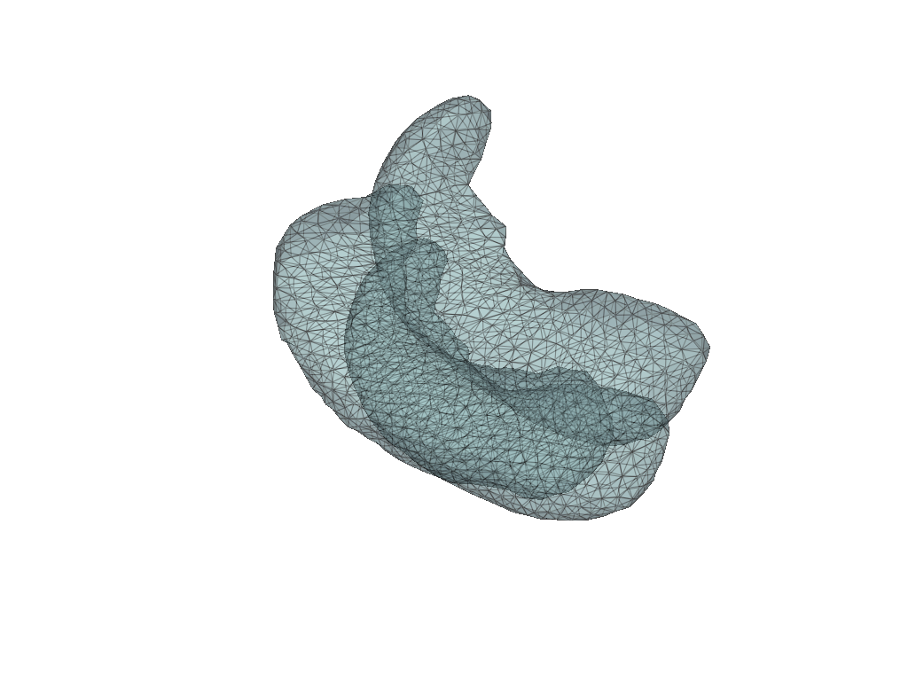
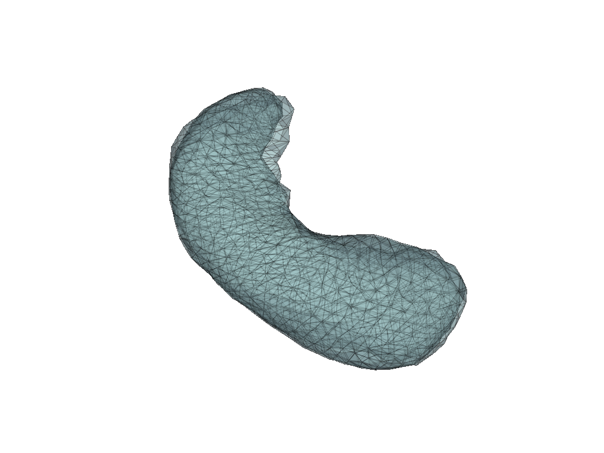
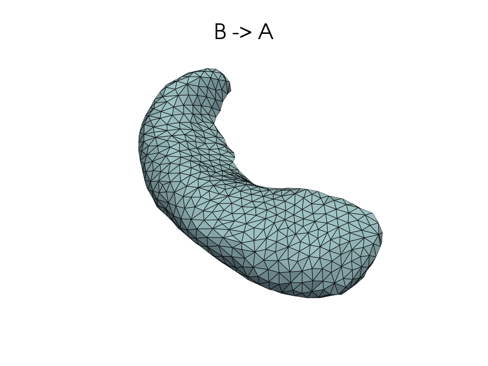
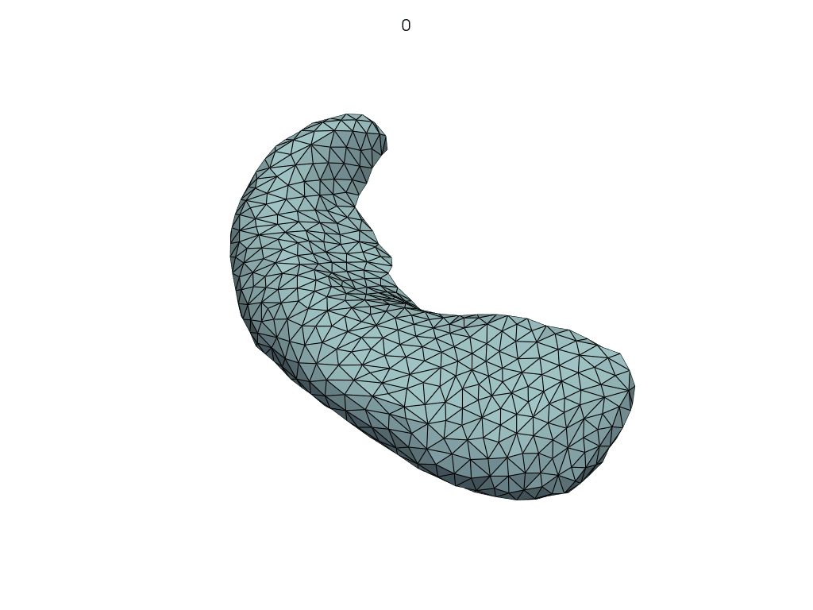
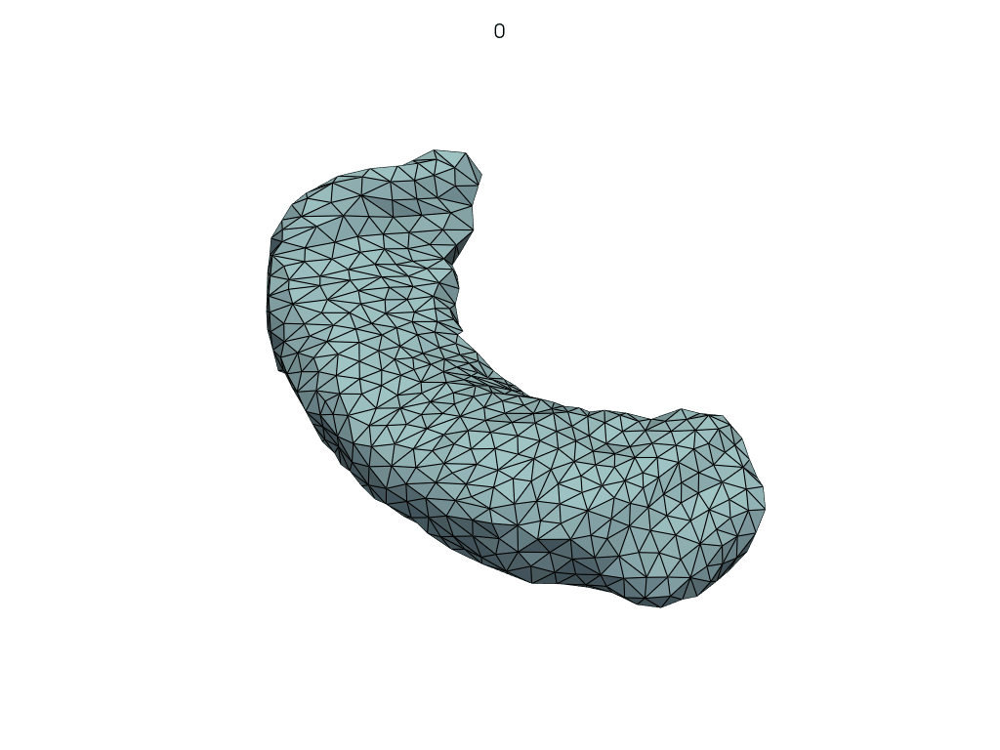

LDDMM: parallel transport#
Imagine we are given three meshes A, B, C.
In this notebook we will:
register A to B (fixed), and C to B (fixed)
parallel transport BC along BA
(Check the last section to understand how to use parallel_transport_ABC with a simple API. This function does all the steps that are presented along this notebook.)
[1]:
import shutil
from pathlib import Path
import pyvista as pv
import polpo.lddmm as plddmm
import polpo.preprocessing.dict as ppdict
from polpo.plot.pyvista import RegisteredMeshesGifPlotter
from polpo.preprocessing.load.deformetrica import (
LoadControlPointsFlow,
LoadMeshFlow,
LoadMomentaFlow,
)
from polpo.preprocessing.load.pregnancy.jacobs import MeshLoader
from polpo.preprocessing.mesh.io import DictMeshWriter
from polpo.preprocessing.mesh.registration import RigidAlignment
from polpo.preprocessing.str import Contains
W0929 16:06:41.839000 224645 site-packages/torch/utils/cpp_extension.py:118] No CUDA runtime is found, using CUDA_HOME='/usr'
[2]:
RECOMPUTE = True # in case registrations have already been run
STATIC_VIZ = True
if STATIC_VIZ:
pv.set_jupyter_backend("static")
[3]:
OUTPUTS_DIR = Path("results") / "transport_abc"
if OUTPUTS_DIR.exists() and RECOMPUTE:
shutil.rmtree(OUTPUTS_DIR)
Loading meshes#
[4]:
struct_subset = ["L_Hipp"]
dict_to_vals = ppdict.ExtractUniqueKey(nested=True) + ppdict.DictToValuesList()
[5]:
path2mesh_01 = MeshLoader(
subject_subset=["01"],
session_subset=[1, 26],
struct_subset=["L_Hipp"],
as_mesh=True,
)
path2mesh_1001B = MeshLoader(
subject_subset=["1001B"],
session_subset=["base1"],
struct_subset=["L_Hipp"],
as_mesh=True,
)
A = (path2mesh_1001B + ppdict.ExtractUniqueKey(nested=True))()
B, C = (path2mesh_01 + dict_to_vals)()
meshes = [A, B, C]
[6]:
pl = pv.Plotter(border=False)
for mesh in meshes:
pl.add_mesh(mesh, show_edges=True, opacity=0.5)
pl.show()

[7]:
prep_pipe = RigidAlignment(max_iterations=500)
meshes = prep_pipe(meshes)
[8]:
pl = pv.Plotter(border=False)
for mesh in meshes:
pl.add_mesh(mesh, show_edges=True, opacity=0.5)
pl.show()

Registrations#
Closely following LDDMM: how to register a mesh to a template?, we register A to B and C to B.
[9]:
meshes_writer = DictMeshWriter(dirname=OUTPUTS_DIR, ext="vtk")
# index: path
dataset = meshes_writer({index: mesh for index, mesh in zip(("A", "B", "C"), meshes)})
[10]:
def _register_dir_from_pair(source, target):
return OUTPUTS_DIR / f"{source}->{target}"
pairs = (("B", "A"), ("B", "C"))
kernel_width = 10.0
registration_kwargs = dict(
kernel_width=kernel_width,
regularisation=1.0,
max_iter=2000,
freeze_control_points=False,
metric="varifold",
tol=1e-16,
attachment_kernel_width=2.0,
)
for source, target in pairs:
if _register_dir_from_pair(source, target).exists():
continue
plddmm.registration.estimate_registration(
source=dataset[source],
target=dataset[target],
output_dir=_register_dir_from_pair(source, target),
**registration_kwargs,
)
Logger has been set to: DEBUG
>> No initial CP spacing given: using diffeo kernel width of 10.0
OMP_NUM_THREADS was not found in environment variables. An automatic value will be set.
OMP_NUM_THREADS will be set to 10
context has already been set
>> No specified state-file. By default, Deformetrica state will by saved in file: results/transport_abc/B->A/deformetrica-state.p.
>> Using a Sobolev gradient for the template data with the ScipyLBFGS estimator memory length being larger than 1. Beware: that can be tricky.
instantiating kernel torch with kernel_width 10.0 and gpu_mode GpuMode.KERNEL. addr: 0x7c772b2e32f0
instantiating kernel torch with kernel_width 2.0 and gpu_mode GpuMode.KERNEL. addr: 0x7c772b31c2c0
>> Set of 24 control points defined.
>> Momenta initialized to zero, for 1 subjects.
dtype=float32
>> Started estimator: ScipyOptimize
>> Scipy optimization method: L-BFGS-B
------------------------------------- Iteration: 1 -------------------------------------
------------------------------------- Iteration: 20 -------------------------------------
>> Log-likelihood = -1.026E+03 [ attachment = -9.705E+02 ; regularity = -5.585E+01 ]
------------------------------------- Iteration: 40 -------------------------------------
>> Log-likelihood = -8.665E+02 [ attachment = -7.619E+02 ; regularity = -1.046E+02 ]
------------------------------------- Iteration: 60 -------------------------------------
>> Log-likelihood = -7.917E+02 [ attachment = -6.680E+02 ; regularity = -1.237E+02 ]
------------------------------------- Iteration: 80 -------------------------------------
>> Log-likelihood = -7.446E+02 [ attachment = -6.160E+02 ; regularity = -1.286E+02 ]
------------------------------------- Iteration: 100 -------------------------------------
>> Log-likelihood = -6.995E+02 [ attachment = -5.715E+02 ; regularity = -1.280E+02 ]
------------------------------------- Iteration: 120 -------------------------------------
>> Log-likelihood = -6.632E+02 [ attachment = -5.348E+02 ; regularity = -1.285E+02 ]
>> Gradient at Termination: 2070.945871966458
>> ABNORMAL:
>> Estimation took: 20 seconds
Deformetrica.__del__()
Logger has been set to: DEBUG
>> No initial CP spacing given: using diffeo kernel width of 10.0
OMP_NUM_THREADS was not found in environment variables. An automatic value will be set.
OMP_NUM_THREADS will be set to 10
context has already been set
>> No specified state-file. By default, Deformetrica state will by saved in file: results/transport_abc/B->C/deformetrica-state.p.
>> Using a Sobolev gradient for the template data with the ScipyLBFGS estimator memory length being larger than 1. Beware: that can be tricky.
>> Set of 24 control points defined.
>> Momenta initialized to zero, for 1 subjects.
dtype=float32
>> Started estimator: ScipyOptimize
>> Scipy optimization method: L-BFGS-B
------------------------------------- Iteration: 1 -------------------------------------
------------------------------------- Iteration: 20 -------------------------------------
>> Log-likelihood = -1.474E+02 [ attachment = -1.410E+02 ; regularity = -6.468E+00 ]
>> Gradient at Termination: 804.101821842839
>> ABNORMAL:
>> Estimation took: 13 seconds
Deformetrica.__del__()
[11]:
source, target = pairs[0]
flow_meshes = plddmm.io.load_deterministic_atlas_flow(
_register_dir_from_pair(source, target),
as_pv=True,
)
pl = RegisteredMeshesGifPlotter()
pl.add_title(f"{source} -> {target}")
pl.add_meshes(flow_meshes)
pl.close()
pl.show()
[11]:

[12]:
source, target = pairs[1]
flow_meshes = plddmm.io.load_deterministic_atlas_flow(
_register_dir_from_pair(source, target),
as_pv=True,
)
pl = RegisteredMeshesGifPlotter()
pl.add_title(f"{source} -> {target}")
pl.add_meshes(flow_meshes)
pl.close()
pl.show()
[12]:
Parallel transport#
Let’s parallel transport BC along B -> A.
(See LDDMM: parallel transporting face motion for details.)
[13]:
source = "B"
geod_target = "A"
transp_target = "C"
transport_output_dir = (
OUTPUTS_DIR / f"{source}{transp_target}--{source}{geod_target}>{geod_target}"
)
if not transport_output_dir.exists():
plddmm.geometry.parallel_transport(
source=dataset[source],
control_points=plddmm.io.load_cp(
_register_dir_from_pair(source, geod_target), as_path=True
),
momenta=plddmm.io.load_momenta(
_register_dir_from_pair(source, geod_target), as_path=True
),
control_points_to_transport=plddmm.io.load_cp(
_register_dir_from_pair(source, transp_target), as_path=True
),
momenta_to_transport=plddmm.io.load_momenta(
_register_dir_from_pair(source, transp_target), as_path=True
),
kernel_width=kernel_width,
output_dir=transport_output_dir,
)
/home/luisfpereira/miniconda3/envs/deformetrica/lib/python3.12/site-packages/launch/compute_parallel_transport.py:92: UserWarning: torch.cholesky is deprecated in favor of torch.linalg.cholesky and will be removed in a future PyTorch release.
L = torch.cholesky(A)
should be replaced with
L = torch.linalg.cholesky(A)
and
U = torch.cholesky(A, upper=True)
should be replaced with
U = torch.linalg.cholesky(A).mH
This transform will produce equivalent results for all valid (symmetric positive definite) inputs. (Triggered internally at /pytorch/aten/src/ATen/native/BatchLinearAlgebra.cpp:1765.)
cholesky_kernel_matrix = torch.cholesky(kernel_matrix)
/home/luisfpereira/miniconda3/envs/deformetrica/lib/python3.12/site-packages/in_out/dataset_functions.py:265: UserWarning: Watch out, I did not get a distance type for the object shape, Please make sure you are running shooting or a parallel transport, otherwise distances are required.
warnings.warn(msg)
time taken to compute parallel_transport: 0.009394772991072387
Let’s visualize the parallel curve.
[14]:
parallel_meshes = LoadMeshFlow(
as_path=False,
extra_rules=Contains("parallel_curve"),
)(transport_output_dir)
pl = RegisteredMeshesGifPlotter(
subtitle=lambda x, y: str(x),
fps=10,
)
pl.add_meshes(parallel_meshes)
pl.close()
pl.show()
[14]:

Let’s shoot from A.
[15]:
select_last = ppdict.DictToValuesList() + (lambda x: x.pop())
shoot_dir = OUTPUTS_DIR / f"{geod_target}(t{source}{transp_target})"
if not shoot_dir.exists():
plddmm.geometry.shoot(
source=dataset[geod_target],
control_points=(LoadControlPointsFlow(as_path=True) + select_last)(
transport_output_dir
),
momenta=(LoadMomentaFlow(as_path=True) + select_last)(transport_output_dir),
kernel_width=kernel_width,
concentration_of_time_points=10,
kernel_type="torch",
output_dir=shoot_dir,
write_adjoint_parameters=False,
)
[ compute_shooting function ]
Defaulting geodesic t0 to 1.
Defaulting geodesic tmax to 1.
Defaulting geodesic tmin to 0.
[16]:
meshes = LoadMeshFlow(
as_path=False,
extra_rules=Contains("_GeodesicFlow_"),
)(shoot_dir)
pl = RegisteredMeshesGifPlotter(
subtitle=lambda x, y: str(x),
fps=10,
)
pl.add_meshes(meshes)
pl.close()
pl.show()
[16]:

Parallel transport (pole ladder)#
[17]:
source = "B"
geod_target = "A"
transp_target = "C"
pole_dir = (
OUTPUTS_DIR / f"{source}{transp_target}--{source}{geod_target}>{geod_target}_pole"
)
if not pole_dir.exists():
plddmm.geometry.parallel_transport(
control_points=plddmm.io.load_cp(
_register_dir_from_pair(source, geod_target), as_path=True
),
momenta=plddmm.io.load_momenta(
_register_dir_from_pair(source, geod_target), as_path=True
),
control_points_to_transport=plddmm.io.load_cp(
_register_dir_from_pair(source, transp_target), as_path=True
),
momenta_to_transport=plddmm.io.load_momenta(
_register_dir_from_pair(source, transp_target), as_path=True
),
kernel_width=kernel_width,
output_dir=pole_dir,
use_pole_ladder=True,
)
transported_cp = plddmm.io.load_cp(pole_dir, as_path=True)
transported_mom = plddmm.io.load_momenta(pole_dir, as_path=True)
In exponential update, I am not flowing because I don't have any template points to flow
In exponential update, I am not flowing because I don't have any template points to flow
[18]:
pole_shoot_dir = OUTPUTS_DIR / f"{geod_target}(t{source}{transp_target})_pole"
if not pole_shoot_dir.exists():
plddmm.geometry.shoot(
source=dataset[geod_target],
control_points=transported_cp,
momenta=transported_mom,
kernel_width=kernel_width,
concentration_of_time_points=10,
kernel_type="torch",
output_dir=pole_shoot_dir,
write_adjoint_parameters=False,
)
[ compute_shooting function ]
Defaulting geodesic t0 to 1.
Defaulting geodesic tmax to 1.
Defaulting geodesic tmin to 0.
[19]:
meshes = LoadMeshFlow(
as_path=False,
extra_rules=Contains("_GeodesicFlow_"),
)(pole_shoot_dir)
pl = RegisteredMeshesGifPlotter(subtitle=lambda x, y: str(x))
pl.add_meshes(meshes)
pl.close()
pl.show()
[19]:
A simpler API#
[20]:
simple_dir = OUTPUTS_DIR / "simple_api"
if not simple_dir.exists():
plddmm.geometry.parallel_transport_ABC(
dataset, output_dir=simple_dir, **registration_kwargs
)
Logger has been set to: DEBUG
>> No initial CP spacing given: using diffeo kernel width of 20.0
OMP_NUM_THREADS was not found in environment variables. An automatic value will be set.
OMP_NUM_THREADS will be set to 10
context has already been set
>> No specified state-file. By default, Deformetrica state will by saved in file: results/transport_abc/simple_api/B->A/deformetrica-state.p.
>> Using a Sobolev gradient for the template data with the ScipyLBFGS estimator memory length being larger than 1. Beware: that can be tricky.
instantiating kernel torch with kernel_width 20.0 and gpu_mode GpuMode.KERNEL. addr: 0x7c76f81d2510
>> Set of 4 control points defined.
>> Momenta initialized to zero, for 1 subjects.
dtype=float32
>> Started estimator: ScipyOptimize
>> Scipy optimization method: L-BFGS-B
------------------------------------- Iteration: 1 -------------------------------------
------------------------------------- Iteration: 20 -------------------------------------
>> Log-likelihood = -2.556E+03 [ attachment = -2.547E+03 ; regularity = -8.589E+00 ]
------------------------------------- Iteration: 40 -------------------------------------
>> Log-likelihood = -2.293E+03 [ attachment = -2.261E+03 ; regularity = -3.155E+01 ]
------------------------------------- Iteration: 60 -------------------------------------
>> Log-likelihood = -2.190E+03 [ attachment = -2.170E+03 ; regularity = -1.998E+01 ]
>> Log-likelihood = -2.189E+03 [ attachment = -2.168E+03 ; regularity = -2.139E+01 ]
------------------------------------- Iteration: 80 -------------------------------------
>> Log-likelihood = -2.110E+03 [ attachment = -2.076E+03 ; regularity = -3.319E+01 ]
>> Gradient at Termination: 491.2100760683912
>> ABNORMAL:
>> Estimation took: 01 minutes and 17 seconds
Deformetrica.__del__()
Logger has been set to: DEBUG
>> No initial CP spacing given: using diffeo kernel width of 20.0
OMP_NUM_THREADS was not found in environment variables. An automatic value will be set.
OMP_NUM_THREADS will be set to 10
context has already been set
>> No specified state-file. By default, Deformetrica state will by saved in file: results/transport_abc/simple_api/B->C/deformetrica-state.p.
>> Using a Sobolev gradient for the template data with the ScipyLBFGS estimator memory length being larger than 1. Beware: that can be tricky.
>> Set of 4 control points defined.
>> Momenta initialized to zero, for 1 subjects.
dtype=float32
>> Started estimator: ScipyOptimize
>> Scipy optimization method: L-BFGS-B
------------------------------------- Iteration: 1 -------------------------------------
>> Gradient at Termination: 245.3812747945223
>> ABNORMAL:
>> Estimation took: 26 seconds
Deformetrica.__del__()
time taken to compute parallel_transport: 0.01729683400481008